Certificates
 Organizational
Organizational
Praktik Kuliah Lapangan Terpadu
2026
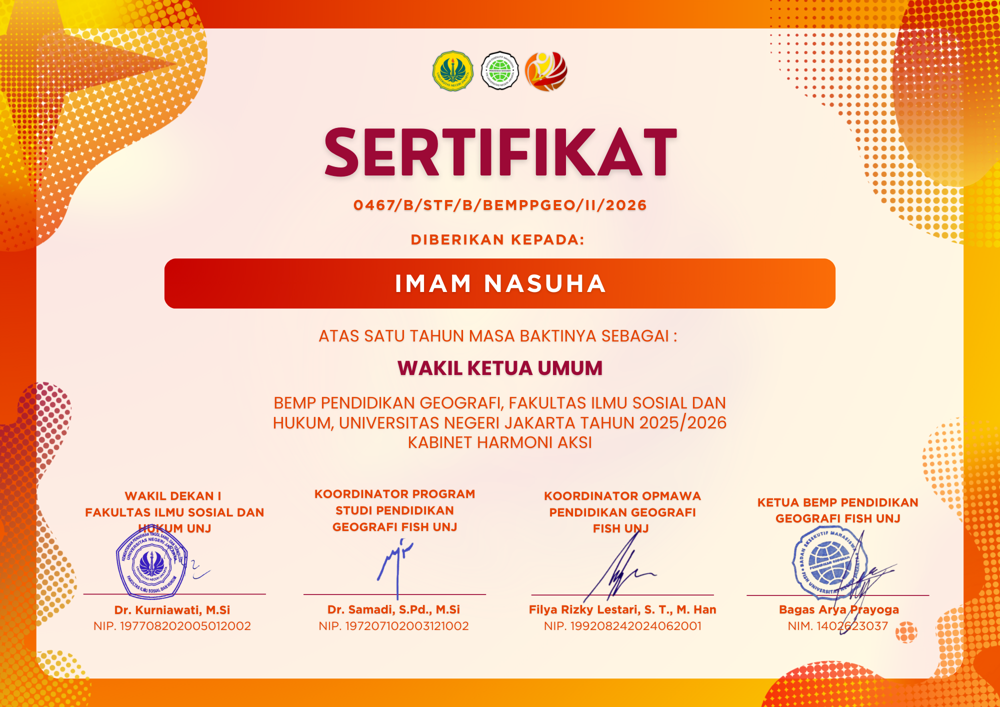
Vice ChairmanBEMP Pendidikan Geografi
2025–2026
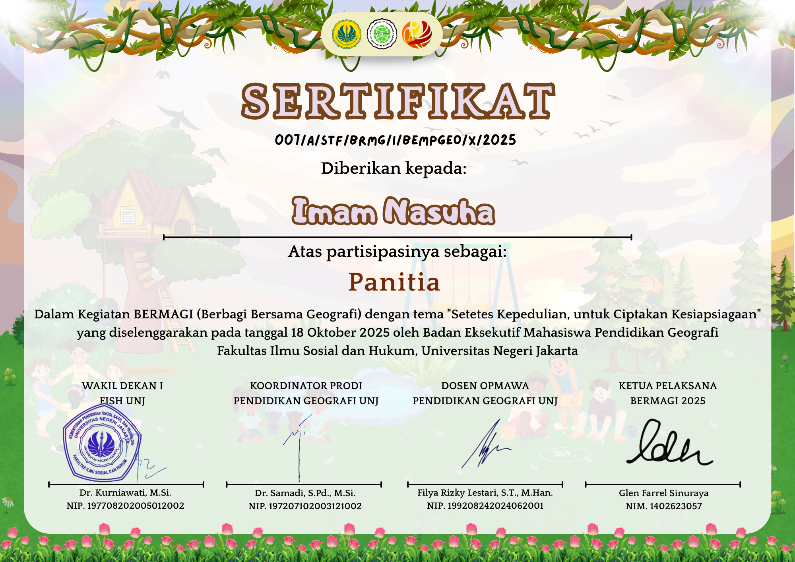
Steering CommitteeBerbagi Bersama Geografi (Bermagi)
Pendidikan Geografi Universitas Negeri Jakarta • 2025
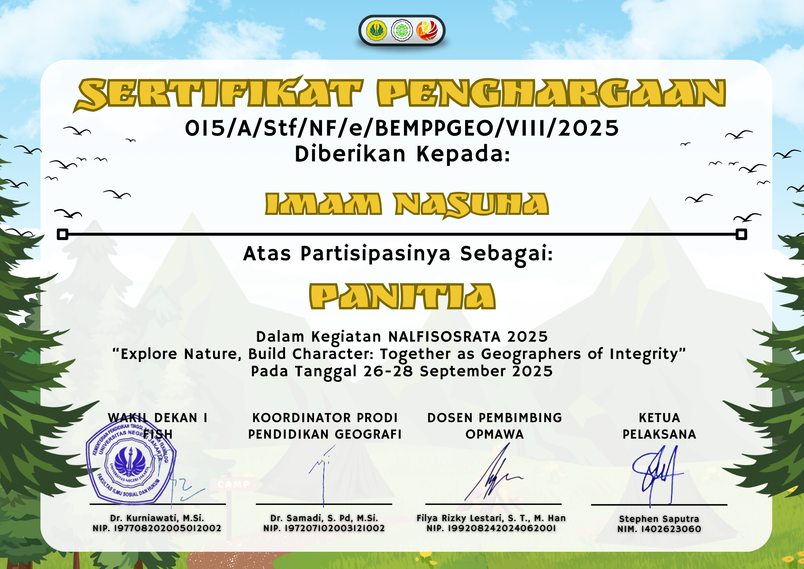
Event CoordinatorPerkenalan Fisik Sosial Ramah Tamah (NALFISOSRATA)
Pendidikan Geografi Universitas Negeri Jakarta • 2025
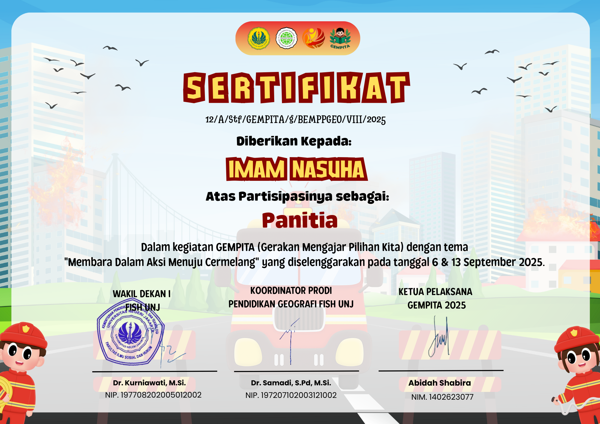
Steering CommitteeGerakan Mengajar Pilihan Kita (GEMPITA)
Pendidikan Geografi Universitas Negeri Jakarta • 2025
 Steering Committee
Steering Committee
PKKMB Pendidikan Geografi
Pendidikan Geografi Universitas Negeri Jakarta • 2025
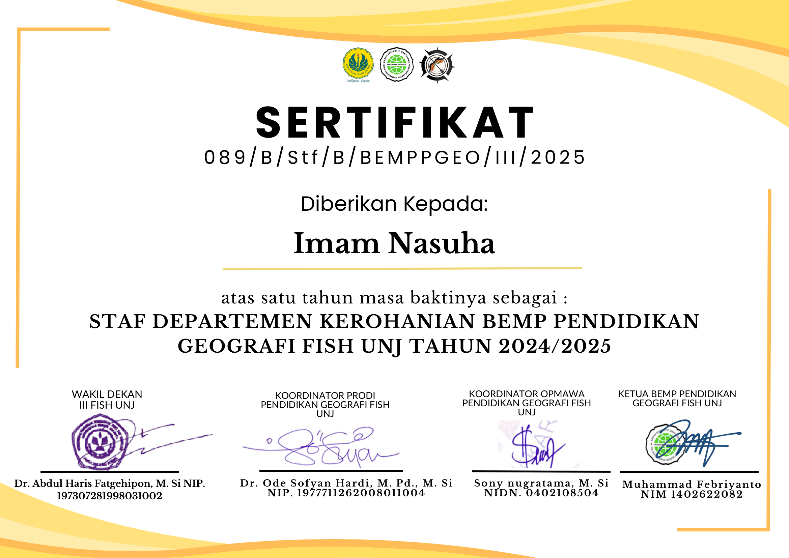
Spiritual Affairs StaffBEMP Pendidikan Geografi
2024–2025
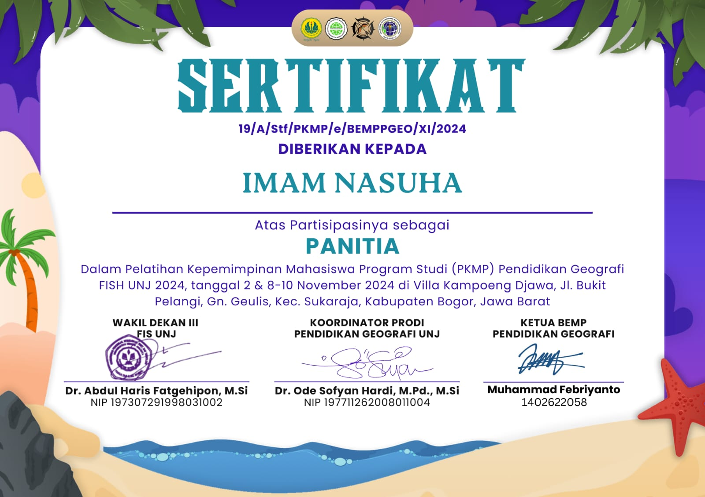
Field CoordinatorPelatihan Kepemimpinan Mahasiswa Prodi (PKMP)
Pendidikan Geografi Universitas Negeri Jakarta • 2024
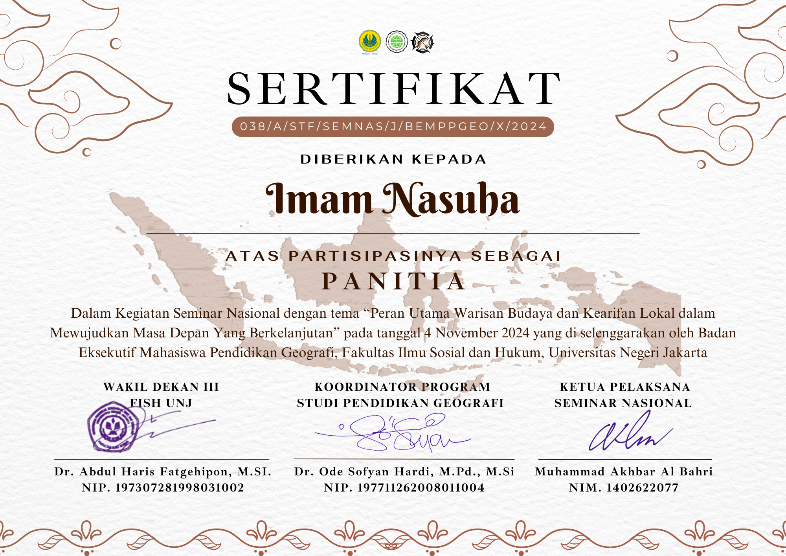
Media Streaming TeamSeminar Nasional
Pendidikan Geografi Universitas Negeri Jakarta • 2024
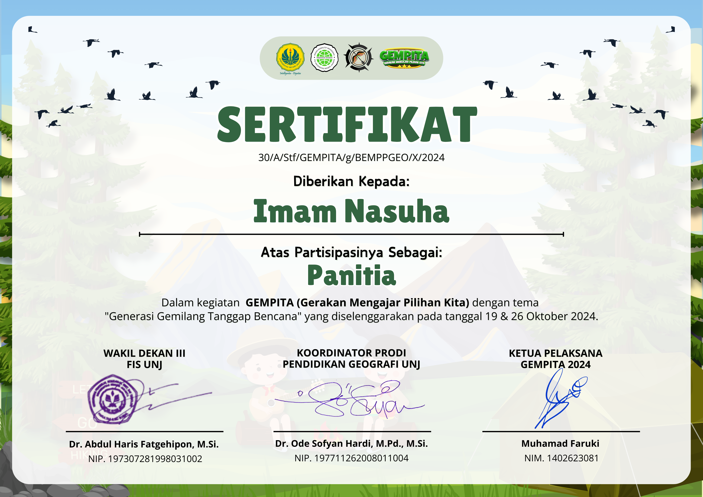
Event StaffGerakan Mengajar Pilihan Kita (GEMPITA)
Pendidikan Geografi Universitas Negeri Jakarta • 2024
 Equipment Staff
Equipment Staff
Perkenalan Fisik Sosial Ramah Tamah (NALFISOSRATA)
Pendidikan Geografi Universitas Negeri Jakarta • 2024
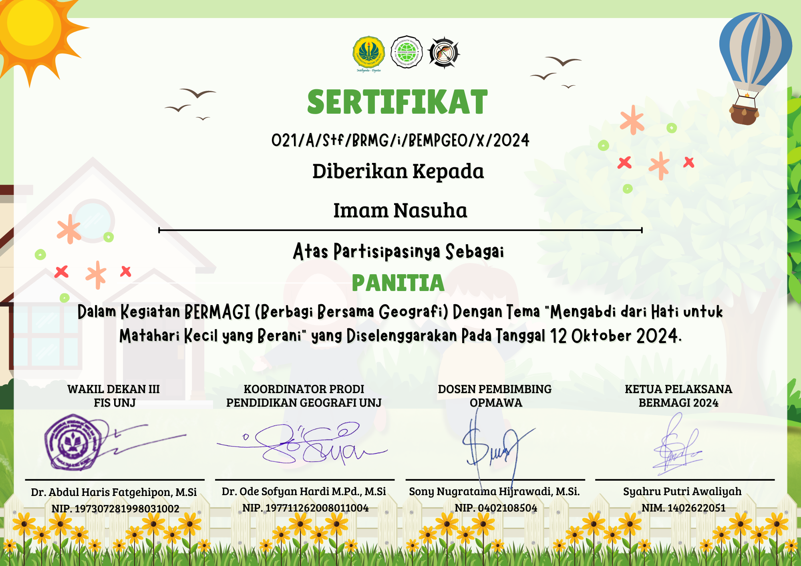
Vice Equipment CoordinatorBerbagi Bersama Geografi (Bermagi)
Pendidikan Geografi Universitas Negeri Jakarta • 2024
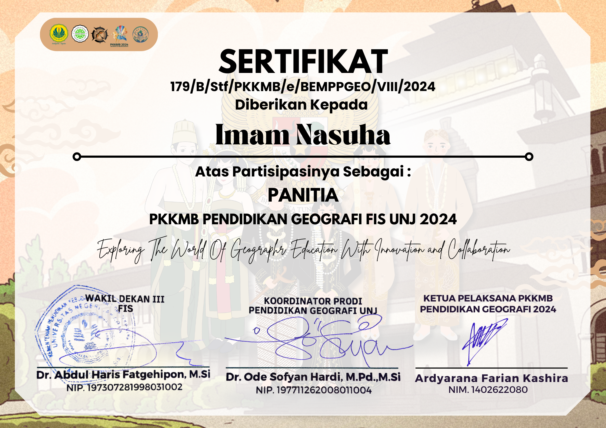
Equipment StaffPKKMB Pendidikan Geografi
Pendidikan Geografi Universitas Negeri Jakarta • 2024
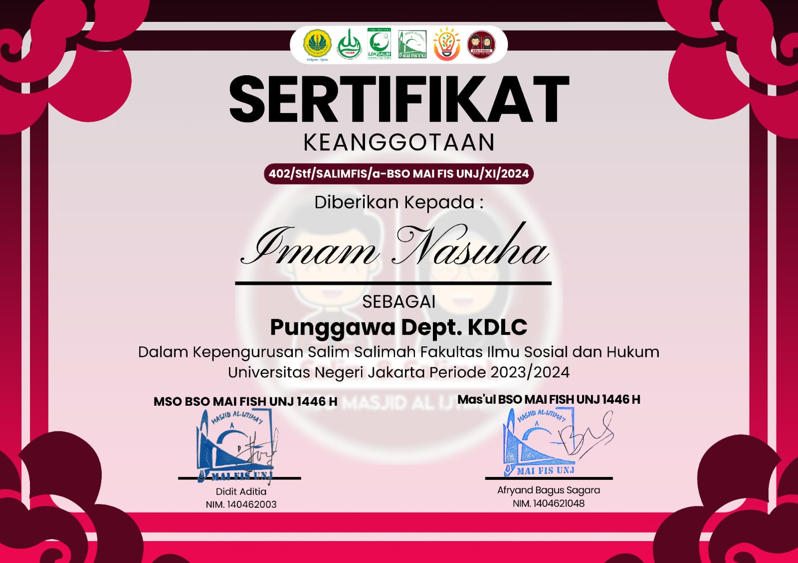
KDLC StaffLDK Salim Salimah
Fakultas Ilmu Sosial dan Hukum UNJ • 2024